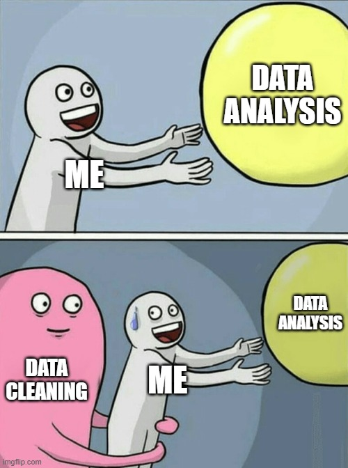
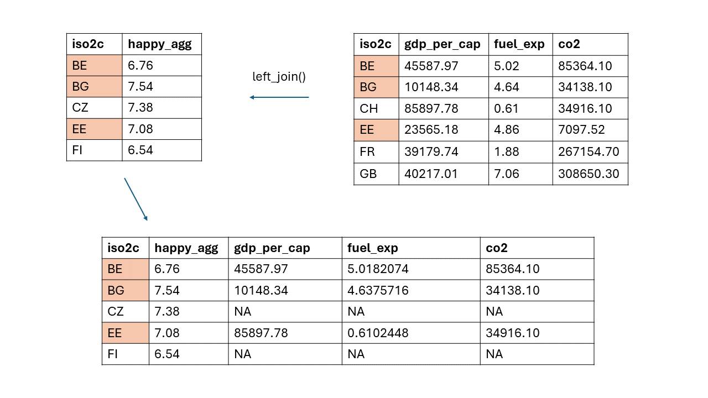
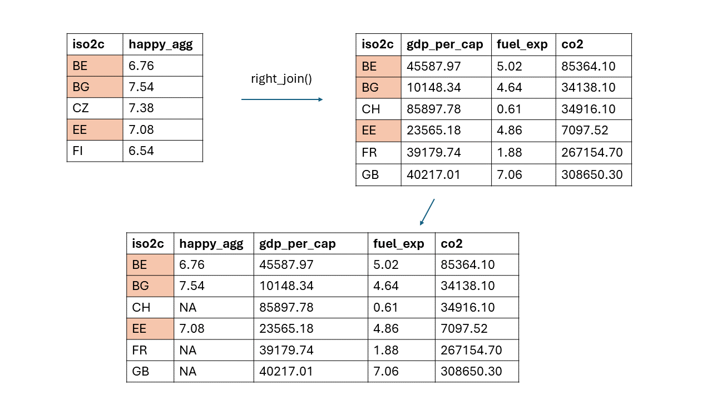
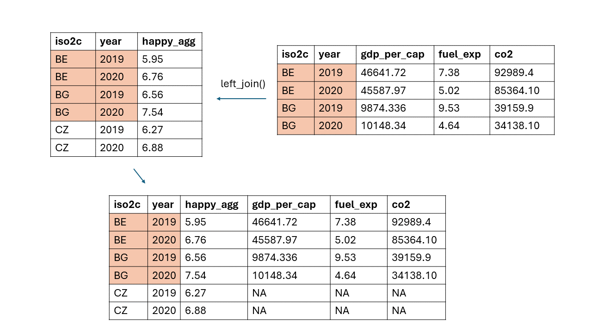
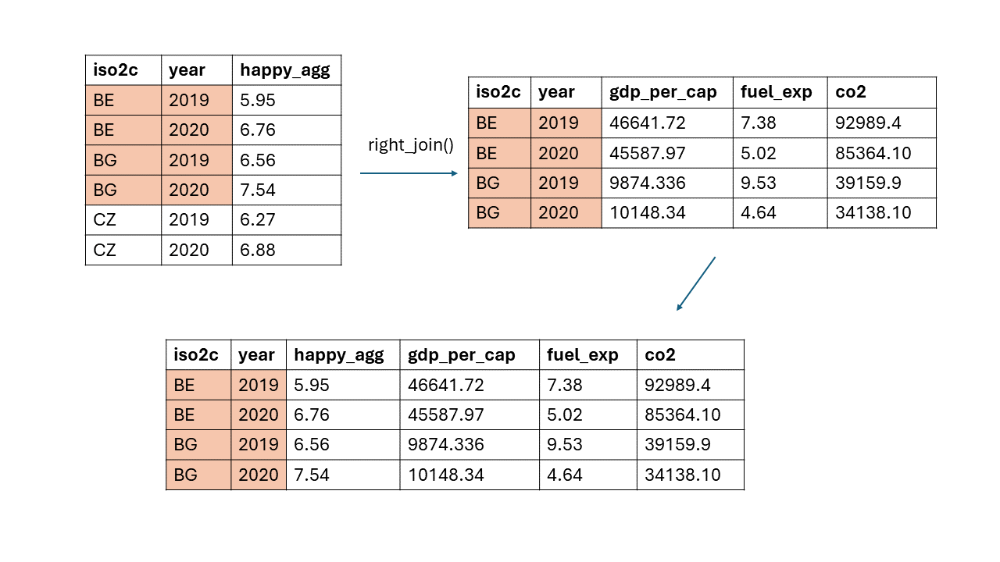

Chapter 3 Data Manipulation

3.1 Packages
This far, we’ve only covered so-called “base R functions” or “built-in functions”, but R has an active community and sometimes further operations are needed, so we use packages. These are including further functions, which we will use heavily in the following section.
3.2 Working with packages
3.2.1 Installing packages
To install packages you use the very creative install.packages() command in R. Note that it is necessary to directly install a package in R. This step is only required once:
Call the
install.packages()command.You put the name of the package in quotation marks into the function.
## Error in install.packages : Updating loaded packages3.2.2 Loading your packages
While you only need to install a package once, you need to load it every time in your script, when you open it. You can do that with the library() function in R:
Call the library() function.
Put the name of
It is always important to have an efficient workflow in R. Traditional R users, load all packages they need at the beginning of their page. Logically, so they just need to go back to the top of the script and need to load it every time they open the script. But there are way more elegant and pragmatic ways to do that.
One way is the pacman package:
First, if you use the name of package and put a “::” behind it you tell R to go into the package and to specifically get one command of the package, in our case the
p_loadcommand.Second, the p_load command, loads the packages in the brackets and checks if they are installed, if not, it automatically installs and loads them.
3.5 The dplyr package
Dplyr is THE standard package, when it comes to data manipulation (next to Base R of course). It has essential functions, and helpful further functions. If you are able to understand the flexibility of these functions you can easily handle every data set.
3.5.1 The filter() command
The first function I introduce you is the filter() function. Within the filter() function we can define certain conditions to cut our Data Set to.
We need the filter() function and then a variable we want to filter based on. In my example, I only want to keep all observations, which have “HU” in their cntry - variable. Substantially this means, I cut down to all observations from Hungary. I use the == operator since I want to have all observations where the condition is true.
Here is a quick reminder of logical operators in R:
Logical Operator Meaning == equals < smaller than > greater than <= less than or equal to >= greater than or equal to ! (e.g. !=; >!; <!…) not equal, not greater than, not smaller than & element-wise AND operator. It returns TRUE if both elements are true | element-wise OR operator. It returns TRUE if one of the statements is TRUE
3.5.1.1 Filtering for only one condition
We start by defining a new object, let us call it
d1.Then we take the data we want to filter, in our case
ess.We define a pipe, write down filter and define a condition, in our case that only cases where
cntryis equal to the iso2c code of Hungary,"HU".In the next code, we do the same and filter for cases that are equal or smaller than 40. Thus we get a dataset with observations who are 40 or younger.
Note: Since the cntry variable is a character variable, we have to put the condition in square brackets. The variable agea is a numeric variable, therefore we only need the number.
## idnt year cntry agea gndr happy eisced netusoft trstprl lrscale
## 1 4501 2020 HU 21 2 3 6 4 3 2
## 2 4502 2020 HU 48 1 5 5 3 5 3
## 3 4503 2020 HU 80 1 6 3 4 4 1
## 4 4504 2020 HU 38 1 6 3 2 1 3
## 5 4505 2020 HU 40 2 10 3 3 9 7
## 6 4506 2020 HU 40 1 1 7 2 2 3## idnt year cntry agea gndr happy eisced netusoft trstprl lrscale
## 1 3 2020 BE 28 2 3 4 5 4 7
## 2 8 2020 BE 28 2 5 1 2 1 1
## 3 9 2020 BE 39 2 8 3 1 4 6
## 4 12 2020 BE 23 1 77 1 4 4 7
## 5 14 2020 BE 40 2 3 5 2 3 2
## 6 15 2020 BE 21 1 1 4 1 8 53.5.1.2 Filtering for multiple condition
#filtering for cases in Hungary and France
d1 <- ess %>%
filter(cntry %in% c("HU", "FR"))
#Checking it
head(d2) ## idnt year cntry agea gndr happy eisced netusoft trstprl lrscale
## 1 3 2020 BE 28 2 3 4 5 4 7
## 2 8 2020 BE 28 2 5 1 2 1 1
## 3 9 2020 BE 39 2 8 3 1 4 6
## 4 12 2020 BE 23 1 77 1 4 4 7
## 5 14 2020 BE 40 2 3 5 2 3 2
## 6 15 2020 BE 21 1 1 4 1 8 5#filtering for cases under 40 in Hungary and France
d2 <- ess %>%
filter(cntry %in% c("HU", "FR") &
agea <= 40)
#Checking it
head(d2)## idnt year cntry agea gndr happy eisced netusoft trstprl lrscale
## 1 2704 2020 FR 23 1 9 3 3 9 3
## 2 2705 2020 FR 30 2 8 7 2 7 9
## 3 2708 2020 FR 17 1 1 2 2 8 3
## 4 2709 2020 FR 26 2 10 1 4 9 6
## 5 2710 2020 FR 34 1 8 3 1 3 8
## 6 2711 2020 FR 30 1 5 3 5 9 103.5.2 The select() function:
We obviously do not care about all variables a dataset can offer (mostly). To select the variables we need, we can use the select() function. This of course depends on our research question. Let us say we want to select the year, the country, the happy variable, age, gender, income and education.
3.5.2.1 Selecting and deleting single Rows
- We only have to pass their column names to
select(). That’s it.
#Selecting relevant variables
d1 <- ess %>%
select(year, cntry, happy, agea, gndr, eisced)
#Checking it
head(d1) ## year cntry happy agea gndr eisced
## 1 2020 BE 1 45 1 6
## 2 2020 BE 3 65 1 5
## 3 2020 BE 3 28 2 4
## 4 2020 BE 1 81 1 7
## 5 2020 BE 4 56 2 7
## 6 2020 BE 3 64 1 53.5.2.2 Deleting Rows
- To delete row, you just put a minus in front of the column, you want to delete. That’s it, the rest stays the same.
#We delete columns by simply putting a comma before it
d2 <- d1 %>%
select(-agea)
#Checking it
head(d2)## year cntry happy gndr eisced
## 1 2020 BE 1 1 6
## 2 2020 BE 3 1 5
## 3 2020 BE 3 2 4
## 4 2020 BE 1 1 7
## 5 2020 BE 4 2 7
## 6 2020 BE 3 1 53.5.2.3 Combining select() with the filter() function
One huge advantage of piping is, that we can clear our data in one step or at least big steps. The only thing you have to be aware of is what you put there. Remember the last command, is always the first to be executed.
In this example, we select the 7 variables and then filter it for all observations under 40.
The two commands are separated by a pipe.
#Combining codes
d1 <- ess %>%
filter(agea < 40) %>%
select(year, cntry, happy, agea, gndr, eisced)
#Checking it
head(d1)## year cntry happy agea gndr eisced
## 1 2020 BE 3 28 2 4
## 2 2020 BE 5 28 2 1
## 3 2020 BE 8 39 2 3
## 4 2020 BE 77 23 1 1
## 5 2020 BE 1 21 1 4
## 6 2020 BE 5 23 2 63.5.3 The arrange() function
If we want our data to be in a certain order, we arrange it with this function.
3.5.3.1 Arranging in ascending order
- The arrange() function is called, and afterwards we call the variable we want to arrange based on. The default function of arrange, orders the data always in ascending order.
#Adding arrange()
d1 <- ess %>%
filter(agea < 40) %>%
select(year, cntry, happy, agea, gndr, eisced) %>%
arrange(agea)
#Checking it
head(d1)## year cntry happy agea gndr eisced
## 1 2020 BE 6 15 2 4
## 2 2020 BE 2 15 1 1
## 3 2020 BG 3 15 9 99
## 4 2020 BG 4 15 1 6
## 5 2020 BG 2 15 2 2
## 6 2020 BG 2 15 1 33.5.3.2 Arranging in descending order
- If we want to order them in ascending order, we have to call
desc()inside thearrange()and put the name of the variable insidedesc().
#arranging in descending order
d1 <- ess %>%
filter(agea < 40) %>%
select(year, cntry, happy, agea, gndr, eisced) %>%
arrange(desc(agea))
#Checking it
head(d1)## year cntry happy agea gndr eisced
## 1 2020 BE 8 39 2 3
## 2 2020 BE 1 39 1 2
## 3 2020 BE 10 39 2 5
## 4 2020 BE 2 39 1 3
## 5 2020 BE 6 39 2 7
## 6 2020 BE 3 39 1 13.5.4 The rename() and relocate() function
Two functions to make our dataset structured more useful are rename() and relocate(), well they do what they basically named after:
3.5.4.1 Renaming Variables: rename()
- Rename() follows a simple logic, you call the function and write down the new name, thus the name you want to assign, then you put an equal sign, and put in the old name, thus the current name of the column.
Note: If you have a variable, which is binary, thus has two discrete categories, you name it after the category which corresponds to the higher value. If male is 0 and female is 1, you name it after the higher category 1, therefore the variable is named female.
#Renaming variables
d1 <- ess %>%
filter(agea < 40) %>%
select(year, cntry, happy, agea, gndr, eisced) %>%
arrange(desc(agea)) %>%
rename(county = cntry,
age = agea,
education = eisced,
female = gndr)
#Checking it
head(d1)## year county happy age female education
## 1 2020 BE 8 39 2 3
## 2 2020 BE 1 39 1 2
## 3 2020 BE 10 39 2 5
## 4 2020 BE 2 39 1 3
## 5 2020 BE 6 39 2 7
## 6 2020 BE 3 39 1 13.5.4.2 Relocating Variables: relocate()
You call relocate and determine the order of the columns.
You can also rearrange single columns, you call the name of the column, which you want to rarrange. and then you either call .before and a column or .after and a column. And the column you want to rearrange is placed before or after the column you want to place. You separate both arguments with a comma.
#relocating variables
d1 <- ess %>%
filter(agea < 40) %>%
select(year, cntry, happy, agea, gndr, eisced) %>%
arrange(desc(agea)) %>%
rename(country = cntry,
age = agea,
education = eisced,
female = gndr) %>%
relocate(education, age, female, country, happy, year) #determine the order
#Checking it
head(d1)## education age female country happy year
## 1 3 39 2 BE 8 2020
## 2 2 39 1 BE 1 2020
## 3 5 39 2 BE 10 2020
## 4 3 39 1 BE 2 2020
## 5 7 39 2 BE 6 2020
## 6 1 39 1 BE 3 2020#relocate after
d2 <- ess %>%
filter(agea < 40) %>%
select(year, cntry, happy, agea, gndr, eisced) %>%
arrange(desc(agea)) %>%
rename(country = cntry,
age = agea,
education = eisced,
female = gndr) %>%
relocate(country, .after = age)
#Checking it
head(d2)## year happy age country female education
## 1 2020 8 39 BE 2 3
## 2 2020 1 39 BE 1 2
## 3 2020 10 39 BE 2 5
## 4 2020 2 39 BE 1 3
## 5 2020 6 39 BE 2 7
## 6 2020 3 39 BE 1 1#relocating before
d3 <- ess %>%
filter(agea < 40) %>%
select(year, cntry, happy, agea, gndr, eisced) %>%
arrange(desc(agea)) %>%
rename(country = cntry,
age = agea,
education = eisced,
female = gndr) %>%
relocate(country, .before = age)
#Checking it
head(d3)## year happy country age female education
## 1 2020 8 BE 39 2 3
## 2 2020 1 BE 39 1 2
## 3 2020 10 BE 39 2 5
## 4 2020 2 BE 39 1 3
## 5 2020 6 BE 39 2 7
## 6 2020 3 BE 39 1 13.5.5 The mutate() function
The next function is the powerful mutate() command. For the start, just think about mutate as a Variable with which you can transform or mutate variables to other variables as you please.
You call mutate() and first you define the name of a new column with a name that is not existent in your dataset. You could also use the name of an existing column, but be careful! Then the new values are overwriting the old ones and we do not want that necessarily, therefore I recommend to always define new columns.
After defining the new name you put an equal sign after it and define the calculation. In our case we just multiply happy, so all values in the happy column by 10
## idnt year cntry agea gndr happy eisced netusoft trstprl lrscale happy_10
## 1 1 2020 BE 45 1 1 6 2 2 3 10
## 2 2 2020 BE 65 1 3 5 4 3 6 30
## 3 3 2020 BE 28 2 3 4 5 4 7 30
## 4 4 2020 BE 81 1 1 7 3 2 6 10
## 5 5 2020 BE 56 2 4 7 5 6 4 40
## 6 6 2020 BE 64 1 3 5 4 6 10 30#mutating variables
d2 <- ess %>%
mutate(new_variable = happy*10/eisced+67,
female_char = as.character(gndr)) %>%
select(female_char, new_variable)
#checking it
head(d2)## female_char new_variable
## 1 1 68.66667
## 2 1 73.00000
## 3 2 74.50000
## 4 1 68.42857
## 5 2 72.71429
## 6 1 73.00000We can also use mutate for more than calculations. We can also define new columns by mutating existing columns into different classes:
The variable new_variable is just a random mathematical operation including two variables.
The second call in mutate() changes the class of the gndr variable to a character and saves it as such in the dataset.
#more mutating
d2 <- ess %>%
mutate(new_variable = happy*10/eisced+67,
female_char = as.character(gndr)) %>%
select(female_char, new_variable)
#Checking it
head(d2)## female_char new_variable
## 1 1 68.66667
## 2 1 73.00000
## 3 2 74.50000
## 4 1 68.42857
## 5 2 72.71429
## 6 1 73.00000What makes mutate() so powerful is that you can use other functions in it to define your variables as you want. Image you have the happy variable. Quick reminder, this variable contains the answers to the question “How happy are you?” in the questionnaire of the European Social Survey. It is scaled on a 0 (not happy at all) to 10(very happy).
Let us say we want to change that. We want to make a variable with only three categories (unhappy, neutral, happy). We decide that all values from 0-4 should be classifies as unhappy, 5 should be classified as neutral and everything above 5 as happy. How can we do that in R?
There are different ways and I will show you some of them:
3.5.5.1 Recoding with mutate() using recode().
You can use the recode() function:
First, we define a new column name, in our example happy_cat.
Then we call
recode()and inside of it we call the variable we want to transform, in our case happy.We put call the category we want to transform in these brackets
``. We put an equal sign after it and define the new value we want to assign to the category.
Note: We can assign different values, do not worry about the “NA_real_” value I will come back to that later
##
## 1 2 3 4 5 6 7 8 9 10 77 88 99
## 849 918 888 897 888 852 883 877 908 895 49 46 50#recoding variables
d1 <- ess %>%
mutate(
gndr_fac = as.factor(gndr), #always check the class
happy_cat = dplyr::recode(happy,
`1` = 0,
`2` = 0,
`3` = 0,
`4` = 0,
`5` = 1,
`6` = 2,
`7` = 2,
`8` = 2,
`9` = 2,
`10` = 2,
`77` = NA_real_,
`88` = NA_real_,
`99` = NA_real_),
female = dplyr::recode(gndr_fac,
`1` = "Male",
`2` = "Female"))
#Let us check how it worked out
table(d1$happy)##
## 1 2 3 4 5 6 7 8 9 10 77 88 99
## 849 918 888 897 888 852 883 877 908 895 49 46 50##
## 0 1 2
## 3552 888 4415## < table of extent 0 >3.5.5.2 Recoding with mutate() using case_when()
As you see, the recode() command is quite extensive. The tidyverse offers a way more intuitive command, the case_when() function. The function case_when is a generalized ifelse function. Which means we can use logical operators. The recode() function is way too extensive, it gives you full control over the data, but we do not that much control:
We again define happy_cat.
We call case_when() and inside we call our variable we want to transform.
We define a logical statements, in our case that happy smaller than 5, meaning that we tell R that all values under 5 should be transformed.
We call the wave ~ and tell R what value should substitute all values which are TRUE for the logical statement.
Note: What is not explicitly stated in the case_when() function will be coded as NA.
#recoding with case_when
d1 <- ess %>%
mutate(gndr_fac = as.factor(gndr),
happy_cat = case_when(
happy < 5 ~ 0,
happy == 5 ~ 1,
happy > 5 ~ 2),
female = case_when(
gndr == 1 ~ "Male",
gndr == 2 ~ "Female"
))
#Checking it
table(d1$female)##
## Female Male
## 4404 4381##
## 0 1 2
## 3552 888 45603.5.5.3 Recoding with mutate() using ifelse()
Do you remember the ifelse() function? As already mentioned, the case_when() command is a generalized ifelse() function. If you want to keep it old school, we can also recode with the ifelse() function:
#recoding with ifelse function
d1 <- ess %>%
mutate(gndr_fac = as.factor(gndr),
happy_cat = ifelse(happy < 5, 0,
ifelse(happy == 5, 1,
ifelse(happy > 5, 2, NA
))),
female = ifelse(gndr_fac == 1, "Male",
ifelse(gndr_fac == 2, "Female", NA))
)
#Check it
table(d1$happy_cat)##
## 0 1 2
## 3552 888 4560##
## Female Male
## 4404 43813.5.5.4 Handling Missing Values/Incomplete Data
As you saw right now, not all data in a dataset is complete. Of course not, there are several sources, which can lead to incomplete/missing data. Which means we need to deal with it directly. If we look into the codebook, the ESS declares different types of missing values with high numbers: 77 means “Refusal”, so the respondent refused to answer, 88 means “dont know”, and 99 “No answer”. Note that the ESS does so, since some researchers are interested in missing values, and why they happen, so they can investigate it.
For us, this is a problem, because we cannot run an analysis with missing values. There are two options:
Using statistics to artificially fill them out, this called multiple imputation techniques, but this requires advanced data science knowledge so I do not recommend that for beginners.
Just delete incomplete observations to have a dataset without missing values
We will do the second one, and I already showed how to recode useless values to NAs so this should be clear by now. Remember, the ifelse() and recode() explicitly need input to turn values into NAs.
#Creating missing values and showing a mutating workflow
d1 <- ess %>%
filter(agea >=40) %>%
select(year, cntry, netusoft, agea, eisced, gndr, happy) %>%
arrange(desc(agea)) %>%
rename(
internet_use = netusoft,
age = agea,
education = eisced,
female = gndr) %>%
mutate(
internet_use = case_when(
internet_use < 5 ~ NA_real_,
TRUE ~ internet_use),
age = case_when(
age == 999 ~ NA_real_,
TRUE ~ age),
education = case_when(
education %in% c(55, 77, 88, 99) ~ NA_real_,
TRUE ~ education),
female = case_when(
female == 1 ~ 0,
female == 2 ~ 1,
female == 9 ~ NA_real_,
TRUE ~ female),
happy = case_when(
happy %in% c(77, 88, 99) ~ NA_real_,
TRUE ~ happy)
)
#Checking it
head(d1) ## year cntry internet_use age education female happy
## 1 2020 BE NA NA 6 1 10
## 2 2020 BE NA NA 2 1 5
## 3 2020 BG NA NA 2 1 3
## 4 2020 BG NA NA 2 0 3
## 5 2020 CH NA NA 1 1 5
## 6 2020 CH NA NA 5 0 1Now we have all ingredients to make our dataset. Do you remember our research question? We want to find out if people, who tend to not trust science are less willing to get vaccinated. We want to do that for all people over 40.
3.5.6 The group_by() and summarize() functions
Two of the most useful commands in R for summary statistics are group_by() and summarize().
group_by() helps us to, when we have categorical variables with several observations and we want to calculate a metric e.g. for this group. The dataset we have loaded, the ESS for example asked 9000 respondents about their level of happiness. Image you are interested in the average level of happiness of men and women. Here the group_by() functions defines the groups we want to aggregate e.g. gender.
3.5.6.1 With one grouping variable and one metric
summarize() defines the metric we want to search. For example we want to calculate the mean of the level of happiness of men and women. We also could just calculate the median for example. Let us have a look:
First, we call the
group_by()function and define the group we want to aggregate, thus the group we are interested in. In our example, we want to aggregate based on the sexes, therefore we need the to define that. Before that we have to delete NAs or transform the variable to the categories we are interested in, therefore we first call mutate() and transform the variable.Second, we call summarize() and define the name of the new column, let us call it average_happiness() and then we call the metric of the variable we are interested in. In our example, we were interested in the average happiness, so we have to call mean() and the happy variable:
#group_by and summarize
d1 <- ess %>%
mutate(
gndr_fac = as.factor(gndr),
female = case_when(
gndr_fac == 1 ~ "Male",
gndr_fac == 2 ~ "Female",
gndr_fac == 9 ~ NA_character_
)) %>%
drop_na() %>%
group_by(female) %>%
summarize(average_happiness = mean(happy))
#Checking it
head(d1)## # A tibble: 2 × 2
## female average_happiness
## <chr> <dbl>
## 1 Female 6.54
## 2 Male 7.17Et voilà, we get a dataset with two observations, because we have only two groups. The second row is the average_happiness row we defined in the summarize() function.
3.5.6.2 With more grouping variables and metrics
The group_by() and summarize() functions are of course way more flexible, for example, we can define more groups. What about that, you are interested in the level of happiness of females, and males in the countries conducted by the ESS. You just put the countries and then the gender variable in the group_by(). Further we might be interested in more metrics, no problem, let us just define more columns with summarize(). Again, you have to first clean the data by transforming the class and deleting missing values.
#grouping and summarize
d1 <- ess %>%
mutate(
country = cntry,
gndr_fac = as.factor(gndr),
female = case_when(
gndr_fac == 1 ~ "Male",
gndr_fac == 2 ~ "Female",
gndr_fac %in% c(77, 88, 99) ~ NA_character_),
age = case_when(
agea == 999 ~ NA_real_,
TRUE ~ agea)
) %>%
drop_na() %>%
group_by(country, female) %>%
summarize(average_happiness = mean(happy),
median_happiness = median(happy),
average_age = mean(age),
meadian_age = median(age)
)## `summarise()` has grouped output by 'country'. You can override using the
## `.groups` argument.## Rows: 40
## Columns: 6
## Groups: country [20]
## $ country <chr> "BE", "BE", "BG", "BG", "CH", "CH", "CZ", "CZ", …
## $ female <chr> "Female", "Male", "Female", "Male", "Female", "M…
## $ average_happiness <dbl> 6.142857, 7.793103, 6.262673, 8.686364, 7.173267…
## $ median_happiness <dbl> 6.0, 6.0, 6.0, 6.0, 5.0, 5.5, 6.0, 6.0, 6.0, 5.0…
## $ average_age <dbl> 53.42857, 53.00431, 51.90323, 53.10909, 55.54455…
## $ meadian_age <dbl> 53.0, 52.0, 50.0, 52.0, 55.0, 50.0, 55.0, 49.0, …3.6 Merging Datasets
3.6.0.1 Introduction to merging with dplyr and preparing data
Sometimes it could be the case that you need variables, which are not in one dataset a priori available, but in another dataset. For this case you load both datasets and merge them together. This only works if there is a similiar data structure, so know your data !
As an example, I will show how to do that with World Bank Data. From this data we can gather nearly all important economic indicators for countries since the 1970s. But mostly we need to merge them to datasets we are interested in. We will merge the World Bank Data with the ESS data. So we can analyze variables, which were not collected in the same dataset.
There are several ways of getting World Bank Data, but I will show you the most efficient. There is the package WDI with which you can get data through an API (Application Programming Interface). Long story short, we do not need to download anything and get the data directly with code:
First we define, which countries should be included:
Afterwards we define, which variables we want. You do that by using the official indicator, thus the variable you want. You can find the indicators on the website of the world bank data. Click on the variables you want, then click on the details, and there you find the indicator. I will use GDP per capita, Fuel exports, CO2 emissions (kt).
Now we are ready to use the API.
To do so we call the WDI function.
We define the argument country to only get countries we are interested in.
We also define the indicators.
Lastly, with the “
start =” argument we define the starting year, so data which goes back to that date is loaded and with “end =” is analagos to define where the time should stop. Thus, both arguments define the time span we want to inspect
wb <- WDI(
country = countries, #We include our countries
indicator = indicators, #We include our variables
start = 2020, #start date
end = 2020) #end date
#This takes some time, especially if you have more countries, more indicators and a longer time span.
#Checking it
head(wb)## country iso2c iso3c year NY.GDP.PCAP.CD TX.VAL.FUEL.ZS.UN
## 1 Belgium BE BEL 2020 45587.97 5.0182074
## 2 Bulgaria BG BGR 2020 10148.34 4.6375716
## 3 Estonia EE EST 2020 23565.18 4.8606100
## 4 France FR FRA 2020 39179.74 1.8844347
## 5 Switzerland CH CHE 2020 85897.78 0.6102448
## 6 United Kingdom GB GBR 2020 40217.01 7.0642437
## EN.ATM.CO2E.KT
## 1 85364.10
## 2 34138.10
## 3 7097.52
## 4 267154.70
## 5 34916.10
## 6 308650.30Let us transform the dataset (Only variables we need, arranging it alphabetically, renaming it and rounding one variable to make the numbers more intuitive):
#Cleaning the wb data
wb <- wb %>%
select(iso2c, NY.GDP.PCAP.CD, TX.VAL.FUEL.ZS.UN, EN.ATM.CO2E.KT) %>%
arrange(iso2c) %>%
rename(gdp_per_cap = NY.GDP.PCAP.CD,
fuel_exp = TX.VAL.FUEL.ZS.UN,
co2 = EN.ATM.CO2E.KT
) %>%
mutate(fuel_exp = round(fuel_exp, 2))
#Checking it
head(wb)## iso2c gdp_per_cap fuel_exp co2
## 1 BE 45587.97 5.02 85364.10
## 2 BG 10148.34 4.64 34138.10
## 3 CH 85897.78 0.61 34916.10
## 4 EE 23565.18 4.86 7097.52
## 5 FR 39179.74 1.88 267154.70
## 6 GB 40217.01 7.06 308650.30Now, we cut down and prepare our ESS data by selecting the countries we are interested in, renaming the country variable (I’ll explain later why), we group by the country (iso2c) and the year (year) to get the average happiness by country. Lastly, we round the value to get only two decimals.
#preparing ess
d1 <- ess %>%
filter(cntry == c("BE", "BG", "CZ", "EE", "FI")) %>%
rename(iso2c = cntry) %>%
group_by(iso2c, year) %>%
summarise(happy_agg = round(mean(happy), 2))## `summarise()` has grouped output by 'iso2c'. You can override using the
## `.groups` argument.## # A tibble: 5 × 3
## # Groups: iso2c [5]
## iso2c year happy_agg
## <chr> <dbl> <dbl>
## 1 BE 2020 7.53
## 2 BG 2020 6.41
## 3 CZ 2020 7.08
## 4 EE 2020 8.52
## 5 FI 2020 7.513.6.0.2 left_join() and right_join() with one identifier
To merge data there are important functions from the dplyr package: The left_join() and the right_join() function. Since they are a bit complicated to understand, we will go through them and in the end, you can choose the one you prefer.
left_join(): You want to keep all observations in the first table, including matching observations in the second table. You merging the data from the right table to left table and get a datset with the same number of rows as the left table:

right_join(): You want to keep all observations in the second table, including matching observations in the first table. You join from the left table to the right table, this time the table takes on the number of observations of the table which is right joined.

Well, in the end of the day it is a matter of programming socialisation and taste, which one do you prefer. I will show you both.
To merge two datasets, you need at least one common variable. One variable will be your unique identifier. Since every country is unique in the dataset that is our unique identifier i.e. the variable we give R to tell him how to merge the datasets:
First, we define a new object, where we will save the dataset called merged_data.
Second, we call left_join()
Then we set our left table and our right table.
We define the by = argument and put the unique identifier in quotation marks, meaning the variable name
For right_join() you do the exact same, but remember you get a different result.
## # A tibble: 6 × 6
## # Groups: iso2c [6]
## iso2c year happy_agg gdp_per_cap fuel_exp co2
## <chr> <dbl> <dbl> <dbl> <dbl> <dbl>
## 1 BE 2020 7.53 45588. 5.02 85364.
## 2 BG 2020 6.41 10148. 4.64 34138.
## 3 EE 2020 8.52 23565. 4.86 7098.
## 4 CH NA NA 85898. 0.61 34916.
## 5 FR NA NA 39180. 1.88 267155.
## 6 GB NA NA 40217. 7.06 308650.3.6.0.3 left_join() and right_join() with two identifiers
Sometimes, you have multiple dimensions. For example, what if we also include the year? Then every country-year observation is our unique identifier. Why? Because one observation was collected in country X to time point Y. That is why you should always know your data and your research goal, because accordingly you have to write your code.
Let us get again World Bank Data and clean it:
#Getting the Data
wb <- WDI(
country = c("BE", "BG"), #We include our countries
indicator = indicators, #We include our variables
start = 2019, #start date
end = 2020) #end date
#Cleaning the Data
wb <- wb %>%
select(-iso3c) %>%
arrange(iso2c) %>%
rename(gdp_per_cap = NY.GDP.PCAP.CD,
fuel_exp = TX.VAL.FUEL.ZS.UN,
co2 = EN.ATM.CO2E.KT
) %>%
mutate(fuel_exp = round(fuel_exp, 2))
#Checking the Data
head(wb)## country iso2c year gdp_per_cap fuel_exp co2
## 1 Belgium BE 2019 46641.721 7.38 92989.4
## 2 Belgium BE 2020 45587.968 5.02 85364.1
## 3 Bulgaria BG 2019 9874.336 9.53 39159.9
## 4 Bulgaria BG 2020 10148.342 4.64 34138.1Now we just simulate some data we want to merge:
#Getting the Data
d1 <- data.frame(
iso2c = c("BE", "BE", "BG", "BG", "CZ", "CZ"),
year = c(2019, 2020, 2019, 2020, 2019, 2020),
happy_agg = c(5.95, 6.76, 6.56, 7.54, 6.27, 6.88)
)
#Checking the Data
head(d1)## iso2c year happy_agg
## 1 BE 2019 5.95
## 2 BE 2020 6.76
## 3 BG 2019 6.56
## 4 BG 2020 7.54
## 5 CZ 2019 6.27
## 6 CZ 2020 6.88How does it look like when we have two variables and the combination out of those is our unique identifier?
left_join()with two identifiers:

- As you can see the dataset again takes on the number of observations of our left table
- To implement it, we have to change by argument. We define a vector, where we put our two identifiers in quotation marks:
#Merging the Data with left_join()
merged_data3 <- left_join(d1, wb,
by = c("iso2c", "year"))
#Checking it
head(merged_data3)## iso2c year happy_agg country gdp_per_cap fuel_exp co2
## 1 BE 2019 5.95 Belgium 46641.721 7.38 92989.4
## 2 BE 2020 6.76 Belgium 45587.968 5.02 85364.1
## 3 BG 2019 6.56 Bulgaria 9874.336 9.53 39159.9
## 4 BG 2020 7.54 Bulgaria 10148.342 4.64 34138.1
## 5 CZ 2019 6.27 <NA> NA NA NA
## 6 CZ 2020 6.88 <NA> NA NA NAright_join()with two identifiers:

- Again we do the same with
right_join():
## iso2c year happy_agg country gdp_per_cap fuel_exp co2
## 1 BE 2019 5.95 Belgium 46641.721 7.38 92989.4
## 2 BE 2020 6.76 Belgium 45587.968 5.02 85364.1
## 3 BG 2019 6.56 Bulgaria 9874.336 9.53 39159.9
## 4 BG 2020 7.54 Bulgaria 10148.342 4.64 34138.13.7 Outlook
This Chapter introduced you to the basic functions of the dplyr package. You are now able to transform variables according to your needs. Further, you learned how to use pipes to work efficient code. However, this chapter only touched the basics and for merging alone there are several further commands, like inner_join(), anti_join(), semi_join()…etc. But when you encounter problems with the two functions I showed you will run into them eventually.
3.8 Exercise Section:
3.8.1 Exercise 1: Let’s wrangle kid
You are interested in discrimination and the perception of the judicial. More specifically, you want to know if people, who fell discriminated evaluate courts differently. Below you see a table with all variables you want to include in your analysis:
| Variable | Description | Scales |
|---|---|---|
| idnt | Respondent’s identification number | unique number from 1-9000 |
| year | The year when the survey was conducted | only 2020 |
| cntry | Country | BE, BG, CH, CZ, EE, FI, FR,GB, GR, HR, HU, IE, IS, IT, LT,NL, NO, PT, SI, SK |
| agea | Age of the Respondent, calculated | Number of Age = 15-90 999 = Not available |
| gndr | Gender | 1 = Male; 2 = Female; 9 = No answer |
| happy | How happy are you | 0 (Extremly unhappy) - 10 (Extremly happy); 77 = Refusal; 88 = Don’t Know; 99 = No answer |
| eisced | Highest level of education, ES - ISCED | 0 = Not possible to harmonise into ES-ISCED; 1 (ES-ISCED I , less than lower secondary) - 7 (ES-ISCED V2, higher tertiary education, => MA level; 55 = Other; 77 = Refusal; 88 = Don’t know; 99 = No answer |
| netusoft | Internet use, how often | 1 (Never) - 5 (Every day); 7 = Refusal; 8 = Don’t know; 9 = No answer |
| trstprl | Most people can be trusted or you can’t be too careful | 0 (You can’t be too careful) - 10 (Most people can be trusted); 77 = Refusal; 88 = Don’t Know; 99 = No answer |
| lrscale | Left-Right Placement | 0 (Left) - 10 (Right); 77 = Refusal; 88 = Don’t know; 99 = No answer |
- Wrangle the data, and assign it to an object called ess.
- Select the variables you need
- Filter for Austria, Belgium, Denmark, Georgia, Iceland and the Russian Federation
- Have a look at the codebook and code all irrelevant values as missing. If you have binary variables recode them from 1, 2 to 0 to 1
- You want to build an extremism variable: You do so by subtracting 5 from the from the variable and squaring it afterwards. Call it extremism
- Rename the variables to more intuitive names, don’t forget to name binary varaibles after the category which is on 1
- drop all missing values
- Check out your new dataset
3.8.2 Exercise 2: Merging Datasets
The gapminder package in R loads automatically the gapminder dataset. The gapminder project is an independent educational non-profit fighting global misconceptions, check out their website: https://www.gapminder.org/ The gapminder dataset is already loaded.
Get an overview of the gapminder dataset. There are different ways to do so, you can choose by yourself
Load World Bank Data from 1972 to 2007 and load the variable “Exports and Goods (% of GDP)”.
Merge the World Bank data to the gapminder data, so a dataset evolves with the number of observations of the gapminder data.
d. Clean the data by dropping all missing values